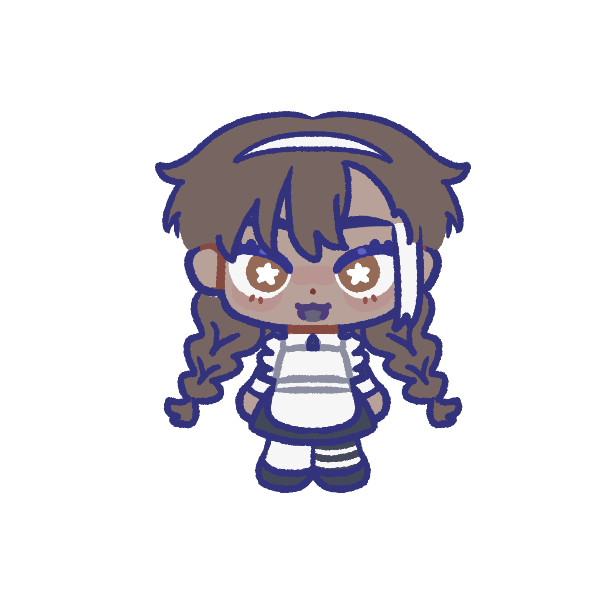

summer snow
okay here’s the webmaster lore
the name’s finley wake, though i also go by liz and dark.
i go by the following pronouns:
- they/them
- xe/hir (test it!)
and my gender is irrelevant!!!
i’m not going to share any super specific personal details about myself but: i’m a STEM major from the philippines. i am 99.99% sure there is something wrong with me because i cannot decide on a website layout (and several other things lol.)
aside from my scientific career path i am a huge fan of speculative and
weird fiction. (also my degree isn’t in computer science or
anything of that sort LMAOoOoOo
 )
)
here’s my listography if you still thought i was a normal person. i was not sane when i wrote that interest/favorite character list.
the little bunkobinkoblornkoblirpy on the right is not my sona or whatever. they’re my MASCOT CHARACTER kaito tsubasa. they have so much lore it’s unreal. my friends have been called terminally online for liking them.
idk what else to say here. fukkit, we ball.